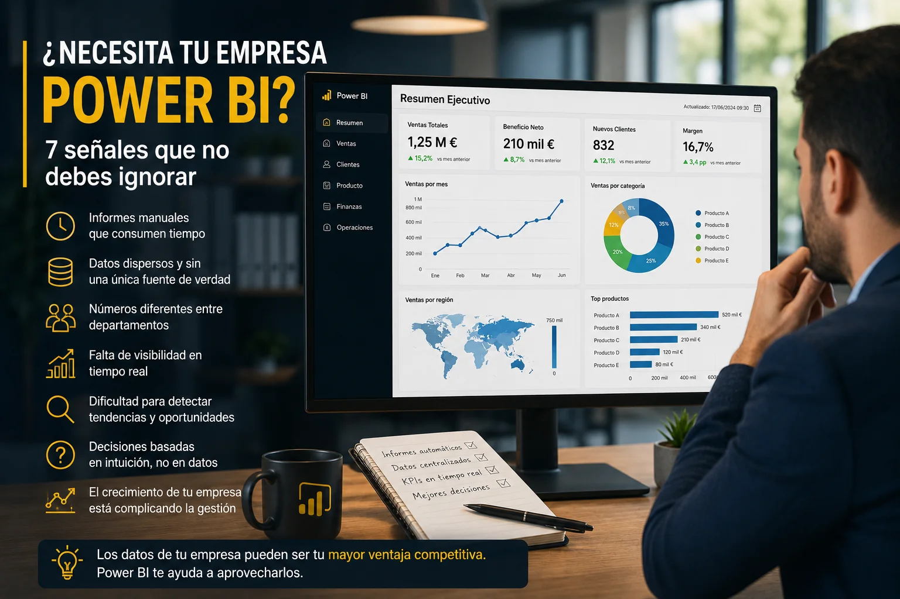

Muchas empresas generan más datos que nunca, pero siguen tomando decisiones con la misma incertidumbre de hace años.
Ventas, clientes, facturación, operaciones o inventario producen información constantemente. Sin embargo, disponer de datos no significa necesariamente disponer de información útil.
Es habitual encontrar organizaciones que trabajan con múltiples hojas de Excel, informes manuales y datos repartidos entre diferentes sistemas. El resultado suele ser siempre el mismo: mucho tiempo dedicado a recopilar información y poca capacidad para analizarla correctamente.
Si te sientes identificado con algunas de las situaciones mencionadas anterioremente y que veremos a continuación, probablemente haya llegado el momento de plantearte una solución de Business Intelligence basada en Power BI.
Una de las señales más claras es el tiempo invertido cada semana o cada mes en preparar informes.
Muchas empresas siguen dependiendo de procesos manuales que incluyen exportar datos, copiar información entre archivos, actualizar fórmulas y generar gráficos para reuniones.
Además de consumir tiempo, estos procesos aumentan el riesgo de errores y dificultan la actualización constante de la información.
Power BI permite automatizar gran parte de estas tareas conectándose directamente a las fuentes de datos y actualizando los informes automáticamente.
¿Te ha ocurrido alguna vez que ventas, finanzas y operaciones presentan cifras distintas para el mismo indicador?
Cuando cada departamento utiliza sus propios archivos y criterios de cálculo aparecen diferentes versiones de la realidad.
Esto genera confusión, pérdida de confianza en los datos y dificultades para tomar decisiones.
Power BI ayuda a establecer una única fuente de la verdad donde todos los usuarios consultan los mismos indicadores y bajo las mismas reglas de negocio.
Muchas organizaciones siguen trabajando con informes que llegan con días o incluso semanas de retraso.
Cuando los datos llegan tarde, las decisiones también llegan tarde.
Con Power BI es posible visualizar información prácticamente en tiempo real y detectar problemas u oportunidades antes de que tengan un impacto significativo en el negocio.
Disponer de datos actualizados permite reaccionar más rápido y mejorar la capacidad de gestión.
A medida que las empresas crecen, también aumenta el número de aplicaciones que utilizan.
ERP, CRM, bases de datos, hojas Excel, herramientas de marketing o aplicaciones internas suelen almacenar información valiosa de forma independiente.
El problema aparece cuando se necesita una visión global del negocio.
Power BI destaca precisamente por su capacidad para integrar diferentes fuentes de información y consolidarlas en un único entorno de análisis.
Muchas empresas conocen sus resultados, pero no entienden qué está provocando esos resultados.
Los dashboards interactivos permiten analizar tendencias, comparar periodos, detectar patrones de comportamiento y encontrar oportunidades de mejora.
La visualización adecuada de los datos ayuda a descubrir información que suele pasar desapercibida en informes tradicionales.
Los responsables de una organización toman decisiones continuamente.
Contrataciones, inversiones, presupuestos o campañas comerciales dependen de disponer de información fiable y actualizada.
Cuando obtener una respuesta requiere consultar varios departamentos y esperar varios días, la capacidad de reacción disminuye considerablemente.
Power BI permite centralizar la información crítica y ponerla a disposición de los responsables mediante dashboards intuitivos y accesibles desde cualquier dispositivo.
Lo que funciona con unos pocos clientes y procesos suele dejar de funcionar cuando la organización crece.
A medida que aumentan las ventas, los empleados y las operaciones, también aumenta la complejidad de los datos.
Muchas empresas descubren que sus procesos manuales dejan de ser sostenibles y necesitan herramientas capaces de escalar junto con el negocio.
Power BI ofrece precisamente esa capacidad de crecimiento y adaptación.
Más allá de la tecnología, el verdadero valor de Power BI consiste en convertir los datos en una herramienta útil para gestionar y hacer crecer una empresa.
Power BI no es únicamente una herramienta para crear gráficos atractivos.
Es una plataforma capaz de transformar grandes volúmenes de datos en información útil para la toma de decisiones.
Si tu empresa dedica demasiado tiempo a preparar informes, trabaja con datos dispersos o tiene dificultades para obtener una visión clara del negocio, probablemente haya llegado el momento de dar el salto hacia una solución de Business Intelligence.
Las organizaciones que aprovechan sus datos de forma eficiente suelen tomar mejores decisiones, reaccionar más rápido a los cambios y obtener una ventaja competitiva significativa.
Puedo ayudarte a automatizar informes, diseñar dashboards profesionales y convertir tus datos en una ventaja competitiva para tu empresa.